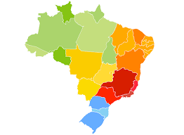

Bem-vindo(a) ao blog sobre geopolítica do Brasil
Explore os maiores temas geopolíticos do Brasil, incluindo economia, relações internacionais e questões territoriais.
Aspectos econômicos
Entenda como o agro e as indústrias moldam o Brasil.
Relações Internacionais
Descubra os acordos comerciais do Brasil.

Questões Territoriais
Saiba mais sobre fronteiras e os recursos naturais .